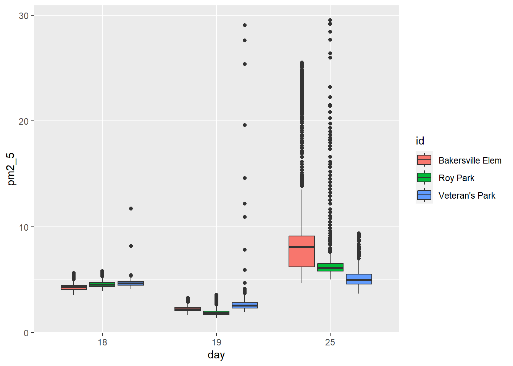
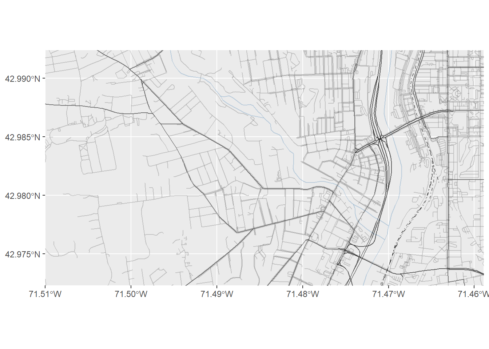
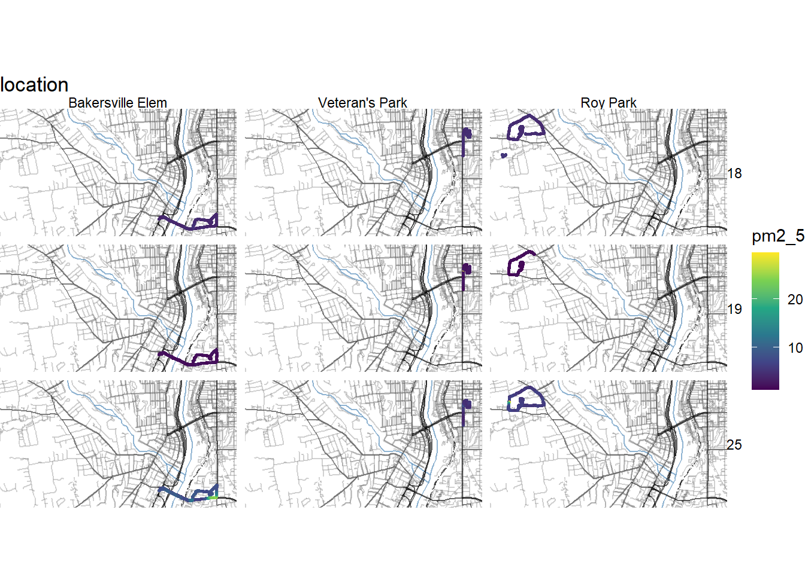
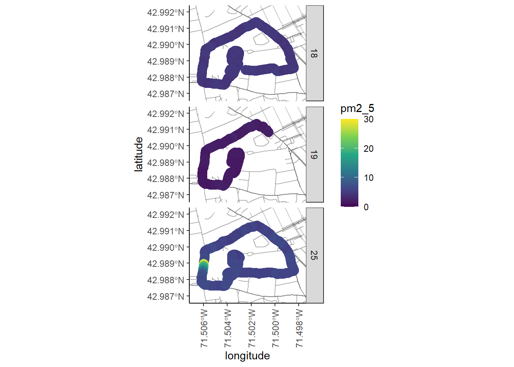
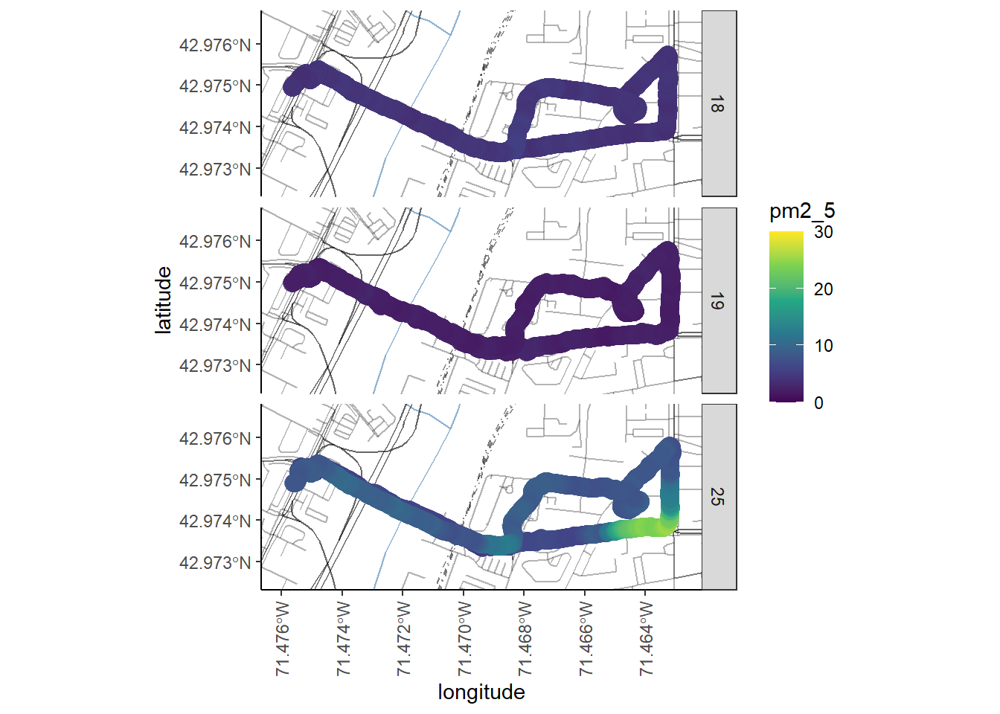
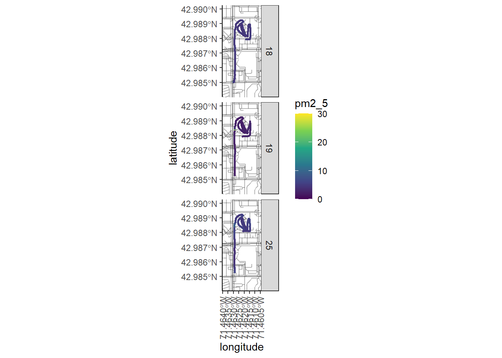

You will need to install a few R packages to be able to visualize your data. Remember you only need to do this once, ideally just run it directly in the console.
install.packages("remotes")
install.packages("glue")
install.packages("plyr")
library(remotes)
remotes::install_github("ropensci/osmdata")Now let’s load our packages.
# load libraries
library(osmdata)
library(plyr)
library(tidyverse)
library(knitr)
library(glue)
library(lubridate)
library(janitor)How does traffic density and tree coverage impact pollution?
Bakersville Elementary School: High Traffic, Low Tree Coverage 20 Elm St, Manchester, NH 03101 This location is within an urban area in downtown Manchester NH. This area is considered to have high traffic density compared to other areas in Manchester, specifically around 3:00. There is low amounts of tree coverage due to the extensive roadways and structures. Key characteristics of this include a bridge crossing the Merrimack River, an elementary school and a hospital.
Veterans Memorial Park: Moderate Traffic, Moderate Tree Coverage 723 Elm St, Manchester, NH 03101 This location is located within an urban area in downtown Manchester, New Hampshire. It is located in an area with moderate traffic, characterized by many traffic lights aiding the build up of standstill traffic. Due to the expansion of buildings and structures in this city environment, there is a moderate tree coverage level as the trees that are found in this area are ones that have been anthropogenically grown and placed there in the making of the park.
Roy Park: Low Traffic, High Tree Coverage Manchester, NH 03102. This location was surrounded by dense suburban tree coverage, and situated deep into a neighborhood. The route that we walked took us through the neighborhood, down a busy street, through another neighborhood, through a forested street, then to the park. The park itself is surrounded on three sides by suburban forest, and has many tall trees surrounding it.
We calculated tree coverage for our 3 locations. We did this by having a satellite photo of equal scale of each location. We split the photo into a grid, with each box having an area of 625m2. We drew the route on the photo, then assigned each box that the route intersected an average tree coverage percentage (25, 50, 75, 100). We then calculated the approx total area surrounding the route we walked (adding up the area of each box intersected by the route), the approximate average percentage of tree coverage. We then multiplied the total area by the average tree coverage percentage to get the average area of tree coverage.
We used the traffic density tool on Google maps to determine the difference in traffic levels between each location.
Throughout October, before all the leaves fell from the trees, 3 different groups went to Roy Park, Bakersfield Elementary, and Veterans Memorial Park. The data was collected on different days but at the same time. Data collected was ambient temperature, PPM, humidity, time, and GPS location. We collected data within an hour from each other, all on the same days (10/18, 10/19, 10/26). We walked the planned route in the general area of the park and through it in order to get appropriate data for the area.
Pull in the pollution data49 the CSV files should be the only ones in the pollution directory for this to work properly.
# set data path
path <- "data/pollution"
# list with all txt files in data directory
list.filenames <- list.files(path = path)
# empty list to load files into
list.data <- list()
# loop to read in data files
for (i in list.filenames){
file <- as.character(glue("{path}/{i}"))
list.data[[i]] <- read_delim(file,
delim = ",", skip = 1)
}
pollution <- ldply(list.data, data.frame) %>% # combine into single data frame
clean_names() # clean up columns
write_delim(pollution, "data/pollution_raw.txt", delim = "\t")Take a look at that data frame - we will need to clean it up so that we only have the information we want and only include data points for which we have lat/long information. We also want to add the locations for each data set, we can do this based on the name of the file we imported.
pollution <- pollution %>%
select(id, latitude, longitude, date, time, temperature, humidity, pm2_5) %>%
filter(latitude > 0 & longitude > 0 & date > 0) %>%
separate(date, into = c("year", "month", "day"), sep = c(4, 6)) %>%
separate(time, into = c("hr", "min", "sec"), sep = c(2, 4)) %>%
filter(!min == "+0") %>%
mutate(longitude = -1*longitude) %>%
filter(year == "2022" & month %in% c("10") & day %in% c("18", "19", "25")) %>%
mutate(id = case_when(id %in% c("CE30034.CSV", "CE30035.CSV", "CE30042.CSV") ~ "Bakersville Elem",
id %in% c("D2A0478.CSV", "D2A0480.CSV", "D2A0481.CSV", "D2A0482.CSV") ~ "Roy Park",
id %in% c("E390128.CSV", "E390129.CSV", "E390130.CSV") ~ "Veteran's Park")) %>%
filter(!is.na(id))We can get the summary statistics for each day and location using group_by() and summarize().
pollution %>%
group_by(day, id) %>%
summarize(mean = mean(pm2_5),
max = max(pm2_5),
min = min(pm2_5))## # A tibble: 9 x 5
## # Groups: day [3]
## day id mean max min
## <chr> <chr> <dbl> <dbl> <dbl>
## 1 18 Bakersville Elem 4.28 5.63 3.56
## 2 18 Roy Park 4.58 5.82 3.93
## 3 18 Veteran's Park 4.69 11.7 4.1
## 4 19 Bakersville Elem 2.23 3.29 1.66
## 5 19 Roy Park 1.89 3.57 1.36
## 6 19 Veteran's Park 2.74 29.0 1.9
## 7 25 Bakersville Elem 8.74 25.5 4.66
## 8 25 Roy Park 6.41 29.5 5.01
## 9 25 Veteran's Park 5.09 9.36 3.68And we can compare those distributions using boxplots.
pollution <- pollution %>%
mutate(id = ordered(id, levels = c("Bakersville Elem", "Veteran's Park", "Roy Park")))
ggplot(pollution, aes(x = day, y = pm2_5, fill = id)) +
geom_boxplot() +
scale_fill_manual(values = c("#f06262", "#f79d37", "#519f28")) +
theme_standard
And we should test if our differences are significant. Let’s start by running and ANOVA to see if there is significant heterogeneity in the data set.
Our null hypothesis is “there is no difference”, we will test to see if there is significant difference among locations, among days, and among the interaction of day and location.
# run anova, with interaction term
anova <- aov(pm2_5 ~ id * day, pollution)
summary(anova)## Df Sum Sq Mean Sq F value Pr(>F)
## id 2 1526 763 227.2 <2e-16 ***
## day 2 58309 29155 8679.9 <2e-16 ***
## id:day 4 7958 1989 592.3 <2e-16 ***
## Residuals 13729 46114 3
## ---
## Signif. codes: 0 '***' 0.001 '**' 0.01 '*' 0.05 '.' 0.1 ' ' 1Now we should run an Tukey Honest Significant Difference test to look at pairwise comparisons among days, locations, and day/location interactions. Tukey’s HSD adjusts for multiple comparisons being made.
# run post-hoc Tukey HSD adjust for multiple comparisons
TukeyHSD(anova)## Tukey multiple comparisons of means
## 95% family-wise confidence level
##
## Fit: aov(formula = pm2_5 ~ id * day, data = pollution)
##
## $id
## diff lwr upr p adj
## Veteran's Park-Bakersville Elem -0.9035295 -1.0055208 -0.8015382 0
## Roy Park-Bakersville Elem -0.3962500 -0.4785620 -0.3139380 0
## Roy Park-Veteran's Park 0.5072795 0.3989345 0.6156245 0
##
## $day
## diff lwr upr p adj
## 19-18 -2.220447 -2.311979 -2.128914 0
## 25-18 2.824741 2.737110 2.912372 0
## 25-19 5.045187 4.954342 5.136032 0
##
## $`id:day`
## diff lwr upr p adj
## Veteran's Park:18-Bakersville Elem:18 0.4135696 0.1833605 0.6437787 0.0000009
## Roy Park:18-Bakersville Elem:18 0.2994537 0.1137592 0.4851483 0.0000202
## Bakersville Elem:19-Bakersville Elem:18 -2.0475092 -2.2160167 -1.8790017 0.0000000
## Veteran's Park:19-Bakersville Elem:18 -1.5411128 -1.7741835 -1.3080422 0.0000000
## Roy Park:19-Bakersville Elem:18 -2.3915302 -2.5988670 -2.1841935 0.0000000
## Bakersville Elem:25-Bakersville Elem:18 4.4662490 4.2979745 4.6345234 0.0000000
## Veteran's Park:25-Bakersville Elem:18 0.8156400 0.5804594 1.0508207 0.0000000
## Roy Park:25-Bakersville Elem:18 2.1352026 1.9590585 2.3113467 0.0000000
## Roy Park:18-Veteran's Park:18 -0.1141159 -0.3587591 0.1305274 0.8794484
## Bakersville Elem:19-Veteran's Park:18 -2.4610788 -2.6929466 -2.2292111 0.0000000
## Veteran's Park:19-Veteran's Park:18 -1.9546824 -2.2369762 -1.6723886 0.0000000
## Roy Park:19-Veteran's Park:18 -2.8050999 -3.0665504 -2.5436493 0.0000000
## Bakersville Elem:25-Veteran's Park:18 4.0526793 3.8209810 4.2843777 0.0000000
## Veteran's Park:25-Veteran's Park:18 0.4020704 0.1180321 0.6861088 0.0003873
## Roy Park:25-Veteran's Park:18 1.7216330 1.4841575 1.9591084 0.0000000
## Bakersville Elem:19-Roy Park:18 -2.3469629 -2.5347098 -2.1592161 0.0000000
## Veteran's Park:19-Roy Park:18 -1.8405665 -2.0879044 -1.5932287 0.0000000
## Roy Park:19-Roy Park:18 -2.6909840 -2.9142386 -2.4677293 0.0000000
## Bakersville Elem:25-Roy Park:18 4.1667952 3.9792576 4.3543329 0.0000000
## Veteran's Park:25-Roy Park:18 0.5161863 0.2668592 0.7655135 0.0000000
## Roy Park:25-Roy Park:18 1.8357489 1.6411189 2.0303788 0.0000000
## Veteran's Park:19-Bakersville Elem:19 0.5063964 0.2716873 0.7411055 0.0000000
## Roy Park:19-Bakersville Elem:19 -0.3440210 -0.5531979 -0.1348442 0.0000121
## Bakersville Elem:25-Bakersville Elem:19 6.5137582 6.3432217 6.6842947 0.0000000
## Veteran's Park:25-Bakersville Elem:19 2.8631493 2.6263448 3.0999537 0.0000000
## Roy Park:25-Bakersville Elem:19 4.1827118 4.0044054 4.3610181 0.0000000
## Roy Park:19-Veteran's Park:19 -0.8504174 -1.1143911 -0.5864437 0.0000000
## Bakersville Elem:25-Veteran's Park:19 6.0073618 5.7728200 6.2419036 0.0000000
## Veteran's Park:25-Veteran's Park:19 2.3567529 2.0703903 2.6431154 0.0000000
## Roy Park:25-Veteran's Park:19 3.6763154 3.4360649 3.9165659 0.0000000
## Bakersville Elem:25-Roy Park:19 6.8577792 6.6487901 7.0667683 0.0000000
## Veteran's Park:25-Roy Park:19 3.2071703 2.9413318 3.4730088 0.0000000
## Roy Park:25-Roy Park:19 4.5267328 4.3113566 4.7421090 0.0000000
## Veteran's Park:25-Bakersville Elem:25 -3.6506089 -3.8872476 -3.4139703 0.0000000
## Roy Park:25-Bakersville Elem:25 -2.3310464 -2.5091325 -2.1529603 0.0000000
## Roy Park:25-Veteran's Park:25 1.3195625 1.0772646 1.5618605 0.0000000All the pairwise comparisons are different from each other with the exception of Veteran’s and Roy Park on the 18th.
We are also interested in a spatial component, i.e. were there hotspots. Too look at this we should plot our points on a map.
First we need to pull down street information - we can do this using OpenStreetMaps.
# get lat/long
min_lat <- min(pollution$latitude)
max_lat <- max(pollution$latitude)
min_long <- min(pollution$longitude)
max_long <- max(pollution$longitude)
# pull major street features
big_streets <- opq(bbox = c(min_long-0.05, min_lat-0.05, max_long+0.05, max_lat+0.05)) %>%
add_osm_feature(key = "highway",
value = c("motorway", "primary", "motorway_link", "primary_link")) %>%
osmdata_sf()
# pull medium sized streets
med_streets <- opq(bbox = c(min_long-0.05, min_lat-0.05, max_long+0.05, max_lat+0.05)) %>%
add_osm_feature(key = "highway",
value = c("secondary", "tertiary", "secondary_link", "tertiary_link")) %>%
osmdata_sf()
# pull small streets
small_streets <- opq(bbox = c(min_long-0.05, min_lat-0.05, max_long+0.05, max_lat+0.05)) %>%
add_osm_feature(key = "highway",
value = c("residential", "living_street",
"unclassified",
"service", "footway")) %>%
osmdata_sf()
# pull rivers
rivers <- opq(bbox = c(min_long-0.05, min_lat-0.05, max_long+0.05, max_lat+0.05)) %>%
add_osm_feature(key = "waterway", value = "river") %>%
osmdata_sf()
# pull railways
railway <- opq(bbox = c(min_long-0.05, min_lat-0.05, max_long+0.05, max_lat+0.05)) %>%
add_osm_feature(key = "railway", value="rail") %>%
osmdata_sf()We can plot all of these using ggplot:
# compile plot
ggplot() +
geom_sf(data = rivers$osm_lines,
inherit.aes = FALSE,
color = "steelblue",
size = .8,
alpha = .3) +
geom_sf(data = railway$osm_lines,
inherit.aes = FALSE,
color = "black",
size = .2,
linetype="dotdash",
alpha = .5) +
geom_sf(data = med_streets$osm_lines,
inherit.aes = FALSE,
color = "black",
size = .3,
alpha = .5) +
geom_sf(data = small_streets$osm_lines,
inherit.aes = FALSE,
color = "#666666",
size = .2,
alpha = .3) +
geom_sf(data = big_streets$osm_lines,
inherit.aes = FALSE,
color = "black",
size = .5,
alpha = .6) +
coord_sf(xlim = c(min_long-0.0025, max_long+0.0025),
ylim = c(min_lat-0.001, max_lat+0.001),
expand = FALSE)
Based off of this, we can plot our pollution data on top as an additional layer and color code each data point based on the level of PM2.5, we can also split it in to additional panels.
# compile plot
ggplot(data = pollution) +
geom_sf(data = rivers$osm_lines,
inherit.aes = FALSE,
color = "steelblue",
size = .8,
alpha = .6) +
geom_sf(data = railway$osm_lines,
inherit.aes = FALSE,
color = "black",
size = .2,
linetype="dotdash",
alpha = .5) +
geom_sf(data = med_streets$osm_lines,
inherit.aes = FALSE,
color = "black",
size = .3,
alpha = .5) +
geom_sf(data = small_streets$osm_lines,
inherit.aes = FALSE,
color = "#666666",
size = .2,
alpha = .3) +
geom_sf(data = big_streets$osm_lines,
inherit.aes = FALSE,
color = "black",
size = .5,
alpha = .6) +
coord_sf(xlim = c(min_long-0.0025, max_long+0.0025),
ylim = c(min_lat-0.001, max_lat+0.001),
expand = FALSE) +
geom_point(data = pollution, aes(x = longitude, y = latitude, color = pm2_5), size = .5, alpha = .5) +
facet_grid(day ~ id) +
scale_color_viridis_c() +
labs(title = "location") +
theme_void()
We probably want to create plots for each location, that way we can “zoom” in and show just that relevant area.
We can start with Roy Park
Roy <- pollution %>%
filter(id == "Roy Park") %>%
filter(latitude > 42.986)
# get lat/long
min_lat <- min(Roy$latitude)
max_lat <- max(Roy$latitude)
min_long <- min(Roy$longitude)
max_long <- max(Roy$longitude)
# compile plot
ggplot(data = Roy) +
geom_sf(data = rivers$osm_lines,
inherit.aes = FALSE,
color = "steelblue",
size = .8,
alpha = .6) +
geom_sf(data = railway$osm_lines,
inherit.aes = FALSE,
color = "black",
size = .2,
linetype="dotdash",
alpha = .5) +
geom_sf(data = med_streets$osm_lines,
inherit.aes = FALSE,
color = "black",
size = .3,
alpha = .5) +
geom_sf(data = small_streets$osm_lines,
inherit.aes = FALSE,
color = "black",
size = .2,
alpha = .3) +
geom_sf(data = big_streets$osm_lines,
inherit.aes = FALSE,
color = "black",
size = .5,
alpha = .6) +
coord_sf(xlim = c(min_long-0.001, max_long+0.001),
ylim = c(min_lat-0.001, max_lat+0.001),
expand = FALSE) +
geom_point(data = Roy, aes(x = longitude, y = latitude, color = pm2_5), size = 4, alpha = .5) +
facet_grid(day ~ .) +
scale_color_viridis_c(limits = c(0, 30), option = "D") +
theme_bw() +
theme(panel.border = element_blank(),
panel.grid.major = element_blank(),
panel.grid.minor = element_blank(),
axis.line = element_line(colour = "black"),
axis.text.x = element_text(angle = 90, vjust = 0.5, hjust=1))
Now, let’s do the same with Bakersville Elementary
Baker <- pollution %>%
filter(id == "Bakersville Elem")
# get lat/long
min_lat <- min(Baker$latitude)
max_lat <- max(Baker$latitude)
min_long <- min(Baker$longitude)
max_long <- max(Baker$longitude)
# compile plot
ggplot(data = Baker) +
geom_sf(data = rivers$osm_lines,
inherit.aes = FALSE,
color = "steelblue",
size = .8,
alpha = .6) +
geom_sf(data = railway$osm_lines,
inherit.aes = FALSE,
color = "black",
size = .2,
linetype="dotdash",
alpha = .5) +
geom_sf(data = med_streets$osm_lines,
inherit.aes = FALSE,
color = "black",
size = .3,
alpha = .5) +
geom_sf(data = small_streets$osm_lines,
inherit.aes = FALSE,
color = "black",
size = .2,
alpha = .3) +
geom_sf(data = big_streets$osm_lines,
inherit.aes = FALSE,
color = "black",
size = .5,
alpha = .6) +
coord_sf(xlim = c(min_long-0.001, max_long+0.001),
ylim = c(min_lat-0.001, max_lat+0.001),
expand = FALSE) +
geom_point(data = Baker, aes(x = longitude, y = latitude, color = pm2_5), size = 4, alpha = .5) +
facet_grid(day ~ .) +
scale_color_viridis_c(limits = c(0, 30), option = "D") +
theme_bw() +
theme(panel.border = element_blank(),
panel.grid.major = element_blank(),
panel.grid.minor = element_blank(),
axis.line = element_line(colour = "black"),
axis.text.x = element_text(angle = 90, vjust = 0.5, hjust=1))
And finally Veteran’s Park:
Vet <- pollution %>%
filter(id == "Veteran's Park")
# get lat/long
min_lat <- min(Vet$latitude)
max_lat <- max(Vet$latitude)
min_long <- min(Vet$longitude)
max_long <- max(Vet$longitude)
# compile plot
ggplot(data = Vet) +
geom_sf(data = rivers$osm_lines,
inherit.aes = FALSE,
color = "steelblue",
size = .8,
alpha = .6) +
geom_sf(data = railway$osm_lines,
inherit.aes = FALSE,
color = "black",
size = .2,
linetype="dotdash",
alpha = .5) +
geom_sf(data = med_streets$osm_lines,
inherit.aes = FALSE,
color = "black",
size = .3,
alpha = .5) +
geom_sf(data = small_streets$osm_lines,
inherit.aes = FALSE,
color = "black",
size = .2,
alpha = .3) +
geom_sf(data = big_streets$osm_lines,
inherit.aes = FALSE,
color = "black",
size = .5,
alpha = .6) +
coord_sf(xlim = c(min_long-0.001, max_long+0.001),
ylim = c(min_lat-0.001, max_lat+0.001),
expand = FALSE) +
geom_point(data = Vet, aes(x = longitude, y = latitude, color = pm2_5), size = .5, alpha = .5) +
facet_grid(day ~ .) +
geom_point(data = Roy, aes(x = longitude, y = latitude, color = pm2_5), size = 4, alpha = .5) +
facet_grid(day ~ .) +
scale_color_viridis_c(limits = c(0, 30), option = "D") +
theme_bw() +
theme(panel.border = element_blank(),
panel.grid.major = element_blank(),
panel.grid.minor = element_blank(),
axis.line = element_line(colour = "black"),
axis.text.x = element_text(angle = 90, vjust = 0.5, hjust=1))
► Question 81
Find at least three points for improvement/lessons learned about the study design itself (separate from what you learned about the process). Discuss this with your team members but you should write your own revisions in about 7-10 sentences.
► Question 82
Discuss with your team mates to identify new questions you have identified, how you might expand and refine the study (beyond just re-designing the pilot study), assume that you are not limited by the constraints of lab time within a course.
Page built: 2022-11-30 using R version 4.1.2 (2021-11-01)